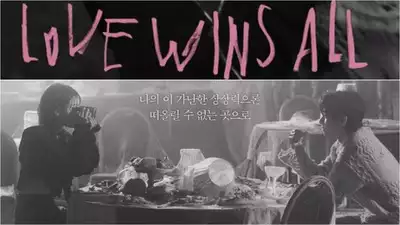

Giới thiệu
Xin chào mọi người, tớ là Nguyệt ٩(๑❛ᴗ❛๑)۶
Sinh ngày: 20/02/2003
Cung hoàng đạo: Song ngư
Quê quán: Bắc Kạn
(๑˃̵ᴗ˂̵) 3 từ nói về tớ:
- Cầu toàn
- tinh tế
- tự tin
(╹◡╹）♡ Sở thích của tớ:
- Món ăn: Sicula, gà,...
- Đồ uống: Coffee, nước ép
- Màu sắc: Tớ thường thay đổi màu sắc và gần đây tớ thích màu hồng
- Tớ còn thích quay chụp mấy thứ linh tinh dễ thương
Ở trên tớ chia sẻ là một số điểm nổi bật thì tại đây tớ muốn kể chi tiết về tớ để các cậu hiểu tớ hơn ☆〜（ゝ。∂）
Tớ là 1 fan Kpop, tớ rất thích IU nên dạo gần đây tớ hay nghe bài Love wins all của chị ý.

À nếu gặp tớ lần đầu có thể mọi người thường sẽ bất ngờ về tính cách của tớ khác hoàn toàn với vẻ bề ngoài. Tiếp xúc với tớ mọi người sẽ thấy tớ mang đúng tính cách của một cung Song ngư. Người sinh vào cung này thường được mô tả là những người nhạy cảm, tưởng tượng và tận hưởng cuộc sống nghệ thuật. Với trực giác mạnh mẽ và khả năng đồng cảm sâu sắc, thường là những người hiền lành, dễ gần và sẵn lòng giúp đỡ người khác. Ừ thì mang tính cách của một Song ngư nên mình khá là nhạy cảm và mơ mộng nên đầu óc mình sẽ đi hơi xa chút xíu.
Tớ không biết phải nói gì nữa nên là nếu có vấn đề gì thắc mắc hoặc muốn tìm hiểu về tớ thì liên hệ phần contact phía dưới để mình biết về nhau rõ hơn nha!!!
☆*:.｡. o(≧▽≦)o .｡.:*☆